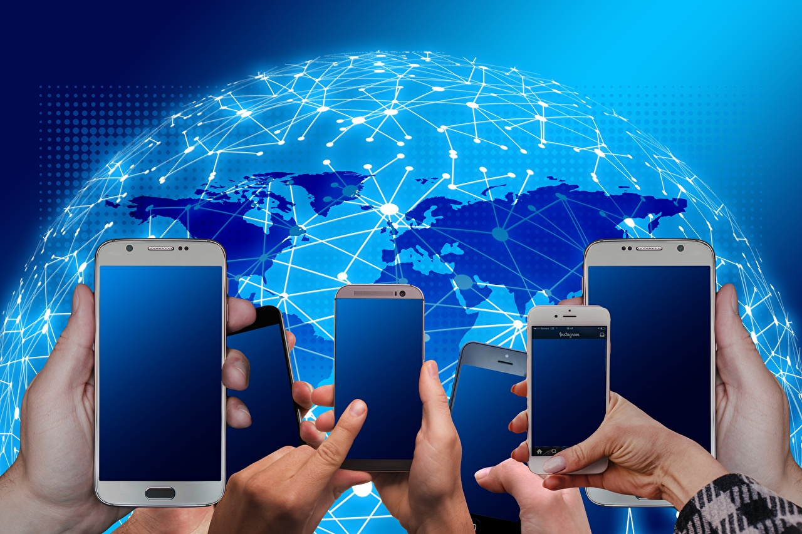

Ура, мы открылись. Салон сотовой связи ждёт вас по адресу г. Москва, бульвар Яна Райниса, дом 1. В продаже имеются сотовые телефоны, комплектующие, и многое другое. Без процентное пополнение счёта абонентов "Билайн". Работаем под заказ без переплаты. Ремонт сотовых телефонов, планшетов.
Благодаря последним инновациям, обмен мгновенными сообщениями и сотовые телефоны стали повседневной жизнью, а их влияние сказалось на жизни общества. Изобретение сотовых телефонов во многом упростило жизнь, но возникли и такие проблемы, как проблемы со здоровьем и безопасность. Причина, по которой мобильные телефоны необходимы и важны, ясна: удобство. Это проще, эффективнее и намного быстрее, чем посещение человека, с которым вы хотите связаться, отправка письма или телеграммы или использование домашнего телефона.
Современные смартфоны оснащены большими сенсорными экранами, впечатляющими камерами и высокотехнологичными функциями, такими как 3D-распознавание лиц. Раньше телефоны в основном использовались для звонков, а теперь – для чего угодно: это и прослушивание музыки, и просмотр веб-страниц, и игры, и видео с котиками на YouTube. Если бы вы сказали, например, еще в 1999 году, на что эти устройства будут способны через 20 с лишним лет, вас бы назвали сумасшедшим. Это звучало бы как научная фантастика.